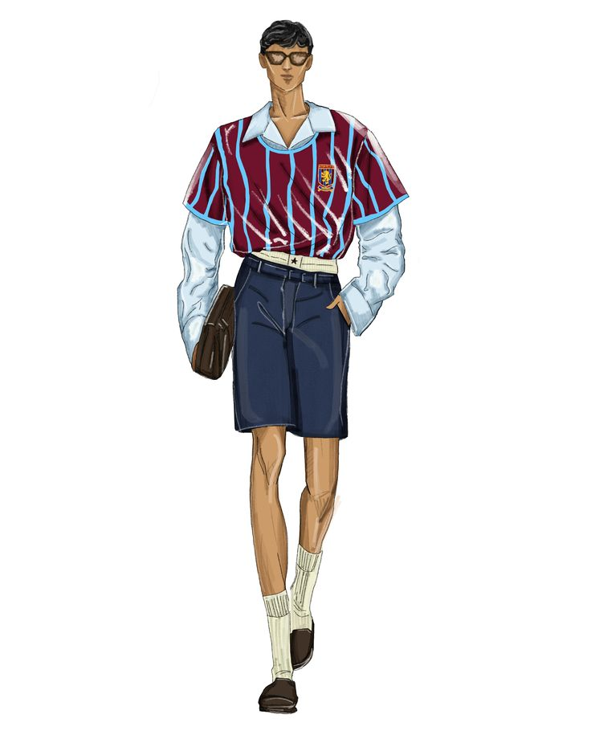
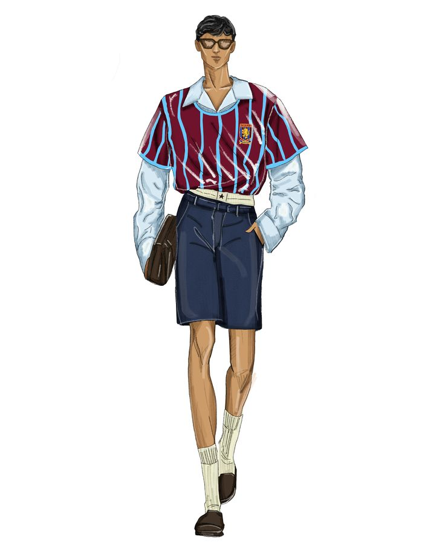

CROQUIS
Os croquis fazem parte do processo criativo, funcionando como o primeiro registro visual das ideias. Através do desenho, formas, silhuetas e conceitos são explorados antes de se transformarem em peças e figurinos, permitindo que cada criação seja pensada com intenção, estética e identidade desde o início.


 
